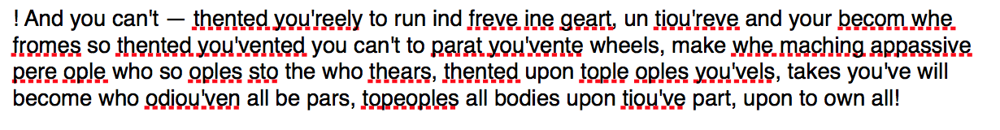

"There is a time when the operation of the machine becomes so odious, makes you so sick at heart, that you can't take part. You can't even passively take part! And you've got to put your bodies upon the gears and upon the wheels, upon the levers, upon all the apparatus, and you've got to make it stop! And you've got to indicate to the people who run it, to the people who own it - that unless you're free, the machine will be prevented from working at all!" - Mario Savio, 1964
The Assembly was a collaborative project that combined robotics, digital speech and text processing, and digital video processing and projection. My role in the project included the conceptualisation, sound and text design, implementation of the visuals and their projection and mapping, and live performance control.
Before making any technical or specific aesthetic choices we considered the subject matter inherent to the idea of the robot - a machine designed to perform work. We decided to do a piece that looks at the robot in terms of that original meaning - a worker - and to ask how this fits into a discourse of exploitation. We wanted to push the worker to its limit, let the robot work and then see what can be the effects on it, or the world it is in, when those limits are exhausted.
The piece is comprised of two sonic elements. The "speech" delivered by the robot, and the accompanying audio. I selected the audio - a piece by Emptyset for both its timbral quality and its progression of intensity, as I believe it served the arch of the piece well.
We decided to have the robot recite a monologue, more of a internal reflection, since there"s the impression that this will be happening in its head - via disembodied voice. I began to think about collecting text extracts from songs or film, with relevant subject matter, but this didn"t go too far. It turns out, I was already familiar with the material I would ultimately choose to use - an excerpt from a speech by Mario Savio.
I then built a Markov model script using Allison Parish"s Markov script. This analyzed the probability of letter and word sequences in the original text, and through changing a variable in the text, I could degrade the size of accuracy - basically whether it looks for word length sequences, thereby effectively reproducing the text, or letter lenght sequenes - which could produce mutations and total degradations of the source text. I ran this iteratively 10 times, each further and further degrading the text.
The source code can be viewed here.
So the inital text would look like this:
And on the final iteration of the degrade, it would look like this:
I used the MacOS built in TTS functionality in Pages, to recite the text, recorded this in Logic, and then edited and effected the audio, with Reverb, Speech transform, and equalisation. The voice degrades as the quality of the speech degrades. You can listen to the monologue below.
For the visual element, I used wall and floor projections. The wall projection is taken from Charlie Chaplin"s film Modern Times. I performed glitch operations on the source video in real-time using a glitch patch in Max/MSP that I adapted from here. When the system finally breaks, this video also breaks, reverting to a flickering red screen on the wall and floor.